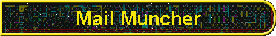

|

|
|
MailMuncher is a utility which reduces the size of email and newsgroup folders. It makes reading mailing lists and newsgroup discussions more efficient. MailMuncher removes extraneous header lines preserving only the From, To and Subject fields. It removes extraneous blank lines but preserves a single blank line between paragraphs. It also removes extraneous quoted material, preserving only the first three lines of a quote. MailMuncher is a filter, that is it processes an input file and produces an output file. The input is not altered. The input can be any ASCII file of email or newsgroup messages in UNIX mailbox format or a format that resembles UNIX mailbox format such as Elm folders, Pine folders or the folder files created by UNIX news readers. Since it doesn't modify the input it is safe to try MailMuncher on a file it might not like, you just won't get the expected results in the output file. The good news is that MailMuncher is free -- free of charge that is, not free of bugs. you can download and play with it to your heart's content. The bad news is that it is written in AWK, an interpreted language available on most platforms. I've included an ancient public domain AWK interpreter for DOS in this archive; if you need MailMuncher to run faster, you'll have to surf the net for a better AWK. If your ISP provides you with shell access you already have access to at least one AWK interpreter. Most UNIX systems also have a copy of Gawk installed in /usr/local/gnu or a similar directory structure. AWK interpreters and compilers are also available commercially. For more information on all this you can read the AWK FAQ posted regularly to the newsgroup: comp.lang.awk. To run MailMuncher with the supplied AWK interpreter, the command line is:
where file.in is replaced with your input file's name and file.out is replaced with your output file's name. MailMuncher requires that another file be present in the working directory named "MMHDR.CFG." A sample is included in this archive. This is an ASCII file. Each line contains a message header field label that starts a line of input that should be deleted from the output. For example, if you want the "mime-version" line of the header to be included in the output, you will need to edit the supplied "mmhdr.cfg" file and remove the line which says "mime-version". If you run across other header lines which you'd like to see excluded from the output, you can add them to
"MMheader.cfg". The restriction is that MailMuncher only processes the first word in
header lines to decide if the line should be deleted or retained. This means that a header with "mime version" needs to be flagged by Clearly, a useful enhancement to MailMuncher would be the ability to know whether or not you are in a message header, and if not, retain body lines which start with header-type words. The problem with this approach is that MailMuncher would then retain the unnecessary header lines from imbedded messages, such as those quoted or forwarded. This is why I chose not to distinguish whether we were in a message header to exclude lines. Another major flaw in MailMuncher is its case sensitivity in header line processing. If you have header lines with "Message-ID:" and "Message-id" and other case variations on this theme, you'll have to include all versions of "message-ID:" in your "mmhdr.cfg" file because MailMuncher isn't smart enough to convert text of the configuration file to a common case. I chose this stupidity to be backward compatible with older AWK implementations which did not have a built-in function for handling case conversions. I tried writing my own function which made MailMuncher run too slowly to be usable. It is simply faster to add a few more lines to the configuration file. A few words of history: I am blind, and depend on a speech synthesizer or a Braille
display to read the computer screen, and
of course my email and news. One of the most time-consuming aspects of this used to be listening to speech reading those tedious header
lines. And even if I used Braille, because our displays are only a single line, scrolling through unnecessary header lines was very
tedious also. I wrote MailMuncher to make reading my mailing lists more enjoyable, and that they are! |
Visit these Spare Time Gizmos
|